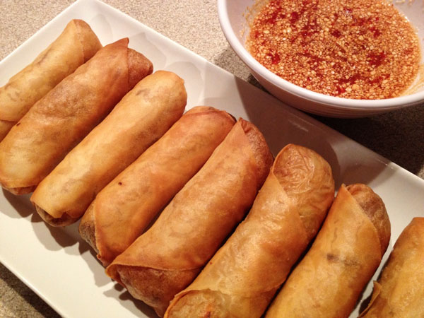

Hmong Eggrolls

Description
Whether it is for a birthday party, a wedding celebration, or a
family gathering, crispy golden Hmong eggrolls are the go-to treat
for me.
There's a little bit of effort involved with preparation, but
you won't regret the outcome. Feel free to add whatever you like to
your eggrolls.
Ingredients
- 1 lb of ground pork
- 2 cup of shredded carrots
- 2 cup shredded cabbage
- 2 cup chopped onion
- 2 tbsp oyster sauce
- 2 tbsp salt
- 3 eggs
- 1 egg yolk for sealing the wrapper
- 50 sheets eggroll skins
Steps
- Add hot water to rice vermicelli cellophane noodles
and let soak 5-10 minutes until soft. Then take scissors
and cut up the noodles.
- Mix meat, cabbage, carrots, onion, oyster sauce, salt,
noodles, eggs until well combined.
- Peel the eggroll skins.
- Place eggroll skin on a flat surface. Add the eggroll
mixture and roll up. Seal the ends with egg yolk.
- Fry in hot oil until golden brown.
Allow the eggrolls to cool on plate for 3-5 minutes,
and then, enjoy the crispy eggrolls!